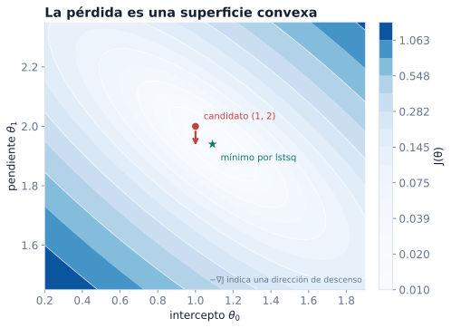
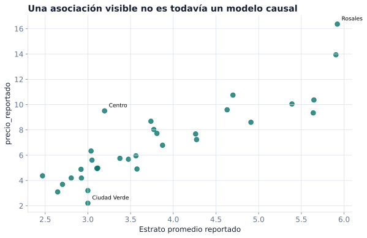
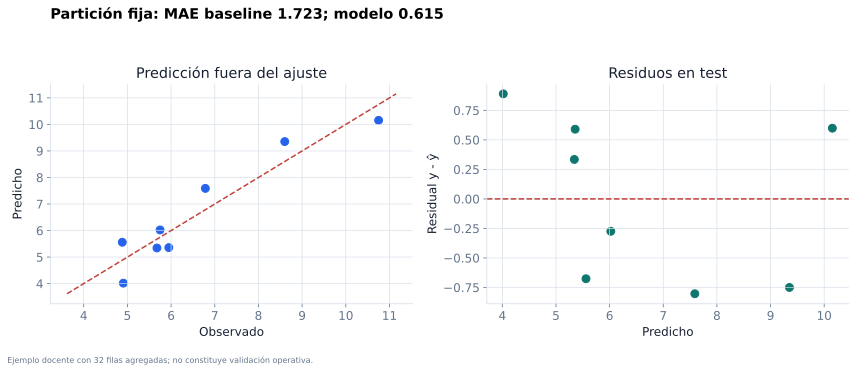
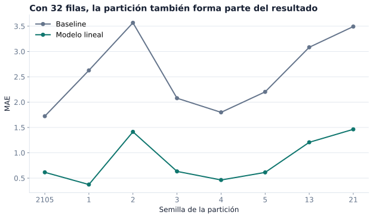

Capítulo 1: Regresión lineal múltiple
Matrices, mínimos cuadrados, ecuación normal e interpretación
Pregunta aplicada
¿Cómo podemos predecir una cantidad numérica usando varias variables, escribir el modelo como álgebra matricial y defender si supera una regla simple?
Objetivos del capítulo
Al terminar este capítulo deberías poder:
- representar un problema de regresión con una matriz de diseño;
- distinguir variables, parámetros, predicciones y residuales;
- escribir MSE como norma cuadrática;
- derivar el gradiente de MSE;
- derivar la ecuación normal;
- implementar mínimos cuadrados con
np.linalg.lstsqy explicar por qué se evita formar una inversa explícita; - comparar un modelo lineal contra un baseline;
- interpretar coeficientes con cuidado.
La regresión lineal parece elemental, pero contiene la gramática de casi todos los modelos que veremos después: datos como matrices, parámetros como vectores, predicciones como operaciones vectorizadas, pérdidas como funciones a minimizar y desempeño como comparación fuera de entrenamiento.
Usaremos los fundamentos probabilísticos de la Parte I: los valores observados \(y_i\) son realizaciones de una variable objetivo \(Y\), y los coeficientes ajustados son una función de la muestra. Por eso una regresión no intenta memorizar cada fila, sino aproximar una cantidad poblacional mediante un problema empírico calculable.
Objeto poblacional y problema empírico
Sea \(Z=(X,Y)\sim P\) con \(X\in\mathbb R^d\) y \(Y\in\mathbb R\). Bajo pérdida cuadrática, la regla poblacional óptima es
\[ f^*(x)=\mathbb E[Y\mid X=x]. \]
La regresión lineal restringe la búsqueda a funciones afines
\[ f_\theta(x)=\theta_0+x^\top\theta_{1:d} \]
y define el riesgo poblacional
\[ R_P(\theta)=\frac12\mathbb E_P[(f_\theta(X)-Y)^2]. \]
Con una muestra \(D_m=((X_1,Y_1),\ldots,(X_m,Y_m))\), solo podemos minimizar
\[ \widehat R_m(\theta) =\frac1{2m}\sum_{i=1}^m(f_\theta(X_i)-Y_i)^2 =\frac1{2m}\lVert X\theta-y\rVert_2^2. \]
El resultado \(\widehat\theta(D_m)\) es un estimador aleatorio antes de observar la muestra. La solución numérica para un dataset concreto es una realización de ese estimador.
Modelo lineal probabilístico
Una interpretación adicional parte del modelo
\[ Y=X^\top\beta+\varepsilon, \qquad \mathbb E[\varepsilon\mid X]=0. \]
La condición de media cero implica \(\mathbb E[Y\mid X]=X^\top\beta\). No implica normalidad ni varianza constante. Si además se supone \(\operatorname{Var}(\varepsilon\mid X)=\sigma^2\), se obtiene un modelo homocedástico. Esos son supuestos sobre el proceso generador, no propiedades que aparezcan por ejecutar LinearRegression.
Insesgamiento condicional de OLS. Si la matriz de diseño observada \(X\) tiene rango columna completo y \(y=X\beta+\varepsilon\) con \(\mathbb E[\varepsilon\mid X]=0\), entonces
\[ \widehat\beta=(X^\top X)^{-1}X^\top y \quad\Longrightarrow\quad \mathbb E[\widehat\beta\mid X]=\beta. \]
Demostración. Sustituir \(y=X\beta+\varepsilon\) produce \(\widehat\beta=\beta+(X^\top X)^{-1}X^\top\varepsilon\). Al condicionar en \(X\), el segundo término tiene esperanza cero. En cómputo seguiremos usando lstsq; la fórmula inversa aparece aquí para estudiar el estimador. \(\square\)

Lectura de la figura. Mínimos cuadrados busca una predicción \(\hat y=X\theta\) dentro del espacio generado por las columnas de \(X\). En la solución óptima, el residual \(r=y-\hat y\) queda perpendicular a ese espacio.
El problema de regresión
En regresión queremos predecir una cantidad numérica. Algunos ejemplos:
- precio de una vivienda;
- consumo de energía;
- tiempo de entrega;
- concentración de una sustancia;
- puntaje de riesgo continuo.
Cada observación tiene variables de entrada y una respuesta.
| Objeto | Ejemplo |
|---|---|
Entrada x_i |
área, habitaciones, ubicación codificada |
Salida y_i |
precio |
| Modelo | regla que transforma x_i en y_hat_i |
| Error | diferencia entre y_i y y_hat_i |
Definición 1.1: problema supervisado de regresión.
Un conjunto de entrenamiento de regresión es una colección de pares (x_i, y_i), donde x_i contiene variables explicativas y y_i es una cantidad real. El objetivo es aprender una función f tal que f(x_i) aproxime y_i y generalice a observaciones no usadas para entrenar.
De una recta a una matriz
La recta clásica es
\[ \hat y_i = \theta_0 + \theta_1 x_i. \]
Con varias variables:
\[ \hat y_i = \theta_0 + \theta_1 x_{i1} + \theta_2 x_{i2} + \cdots + \theta_d x_{id}. \]
Para escribir esto como producto matricial agregamos una columna de unos. Si hay \(m\) observaciones y \(d\) variables originales, la matriz de diseño tiene \(p=d+1\) columnas:
\[ X = \begin{bmatrix} 1 & x_{11} & x_{12} & \cdots & x_{1d}\\ 1 & x_{21} & x_{22} & \cdots & x_{2d}\\ \vdots & \vdots & \vdots & & \vdots\\ 1 & x_{m1} & x_{m2} & \cdots & x_{md} \end{bmatrix} \in \mathbb{R}^{m\times p}. \]
El vector de parámetros es
\[ \theta = \begin{bmatrix} \theta_0\\ \theta_1\\ \vdots\\ \theta_d \end{bmatrix}. \]
Entonces todas las predicciones se escriben como:
\[ \hat y = X\theta. \]
Definición 1.2: matriz de diseño.
La matriz de diseño X contiene las variables que el modelo usa para producir predicciones. Puede incluir una columna de intercepto, variables originales, variables transformadas, interacciones o codificaciones de variables categóricas.
En Python:
import numpy as np
def add_intercept(X):
X = np.asarray(X, dtype=float)
ones = np.ones((X.shape[0], 1))
return np.hstack([ones, X])
X_design = add_intercept(X_raw)
y_hat = X_design @ thetaDimensiones: la primera defensa contra errores
Antes de derivar o programar, revisa dimensiones.
| Objeto | Forma |
|---|---|
X |
(m, p) |
theta |
(p,) o (p, 1) |
X @ theta |
(m,) o (m, 1) |
y |
(m,) |
X.T @ X |
(p, p) |
X.T @ y |
(p,) |
Chequeo rápido. Si X @ theta no produce un vector con una predicción por observación, el problema no es estadístico todavía: es de representación.
Residuales y pérdida
El residual de la observación i es
\[ r_i = y_i - \hat y_i. \]
En vector:
\[ r = y - X\theta. \]
La pérdida de mínimos cuadrados mide el promedio de errores cuadrados:
\[ J(\theta) = \frac{1}{2m}\sum_{i=1}^m(\hat y_i-y_i)^2 = \frac{1}{2m}\|X\theta-y\|_2^2. \]
El factor 1/2 se usa para que el 2 de la derivada desaparezca.
Definición 1.3: MSE y pérdida cuadrática.
El error cuadrático medio es \[
\operatorname{MSE}(\theta)=\frac{1}{m}\|X\theta-y\|_2^2.
\] La pérdida \[
J(\theta)=\frac{1}{2}\operatorname{MSE}(\theta)
\] tiene el mismo minimizador, pero un gradiente más limpio.
En el ejemplo controlado \(x=(0,1,2,3)\) y \(y=(1.1,2.9,5.2,6.8)\), cada par \((\theta_0,\theta_1)\) determina una recta y, por tanto, un valor de \(J\). La figura muestra esa pérdida como una superficie de contornos.

lstsq, y el gradiente local señala cómo reducir la pérdida.
Lectura de la figura. Los contornos son conjuntos de parámetros con pérdida constante. La convexidad implica que el mínimo local también es global; no implica que formar \((X^\top X)^{-1}\) sea el método numérico apropiado para encontrarlo.
Implementación:
def mse_loss(X, y, theta):
residual = y - X @ theta
return np.mean(residual ** 2)
def half_mse_loss(X, y, theta):
residual = y - X @ theta
return 0.5 * np.mean(residual ** 2)Derivación del gradiente
Partimos de:
\[ J(\theta)=\frac{1}{2m}(X\theta-y)^\top(X\theta-y). \]
Expandiendo:
\[ J(\theta)= \frac{1}{2m} \left( \theta^\top X^\top X\theta -2y^\top X\theta +y^\top y \right). \]
Usamos dos reglas:
\[ \nabla_\theta(\theta^\top A\theta)=(A+A^\top)\theta, \]
y si A es simétrica:
\[ \nabla_\theta(\theta^\top A\theta)=2A\theta. \]
Como X.T @ X es simétrica:
\[ \nabla J(\theta) = \frac{1}{2m} \left( 2X^\top X\theta - 2X^\top y \right). \]
Por tanto:
\[ \nabla J(\theta) = \frac{1}{m}X^\top(X\theta-y). \]
Proposición 1.1: gradiente de MSE escalado.
Para \[
J(\theta)=\frac{1}{2m}\|X\theta-y\|_2^2,
\] el gradiente es \[
\nabla J(\theta)=\frac{1}{m}X^\top(X\theta-y).
\]
Implementación:
def mse_gradient(X, y, theta):
m = X.shape[0]
residual = y - X @ theta
return -(X.T @ residual) / mEcuación normal
Un mínimo interior de una función diferenciable satisface:
\[ \nabla J(\theta)=0. \]
Entonces:
\[ \frac{1}{m}X^\top(X\theta-y)=0. \]
Multiplicando por \(m\):
\[ X^\top X\theta-X^\top y=0. \]
Reordenando:
\[ X^\top X\theta = X^\top y. \]
Esta es la ecuación normal.
Si X.T @ X es invertible:
\[ \theta^\star=(X^\top X)^{-1}X^\top y. \]
Proposición 1.2: solución de mínimos cuadrados.
Si X tiene rango columna completo, entonces X.T @ X es invertible y el minimizador único de la pérdida cuadrática es \[
\theta^\star=(X^\top X)^{-1}X^\top y.
\]
La expresión con inversa es una identidad algebraica bajo rango completo, no una receta numérica. Para calcular el minimizador preferimos operar sobre \(X\):
def fit_lstsq(X, y):
theta, residuals, rank, singular_values = np.linalg.lstsq(
X,
y,
rcond=None,
)
return theta, rank, singular_valuesCriterio numérico. np.linalg.solve(X.T @ X, X.T @ y) es mejor que formar una inversa y resulta útil en ejemplos pequeños de rango completo. np.linalg.lstsq evita formar \(X^\top X\), informa rango y valores singulares, y también funciona cuando la solución en parámetros no es única.
En norma 2, si \(X\) tiene rango columna completo,
\[ \kappa_2(X^\top X)=\kappa_2(X)^2. \]
Por eso formar \(X^\top X\) puede amplificar un problema de condicionamiento. Para diagnosticarlo conviene inspeccionar np.linalg.cond(X), no únicamente la matriz de las ecuaciones normales.
Interpretación geométrica
El modelo busca un vector X theta en el espacio generado por las columnas de X. Ese espacio es un subespacio de \(\mathbb R^m\). El vector observado y puede no estar exactamente en ese subespacio. Mínimos cuadrados encuentra la proyección de y sobre el espacio columna de X.
En la solución:
\[ X^\top(y-X\theta^\star)=0. \]
Esto dice que los residuales de entrenamiento son ortogonales a cada columna de X. Es una propiedad algebraica del ajuste muestral; no afirma independencia, no elimina estructura no lineal y no garantiza el mismo patrón fuera de entrenamiento.
Ejemplo resuelto 1: datos exactos
Supongamos:
\[ X = \begin{bmatrix} 1 & 0 \\ 1 & 1 \\ 1 & 2 \end{bmatrix}, \quad y = \begin{bmatrix} 1 \\ 3 \\ 5 \end{bmatrix}. \]
El patrón exacto es:
\[ y = 1 + 2x. \]
La solución esperada es:
\[ \theta = \begin{bmatrix} 1\\ 2 \end{bmatrix}. \]
X = np.array([[1, 0], [1, 1], [1, 2]], dtype=float)
y = np.array([1, 3, 5], dtype=float)
theta = np.linalg.lstsq(X, y, rcond=None)[0]
thetaEjemplo resuelto 2: datos con ruido
Ahora supón:
\[ y = \begin{bmatrix} 1.1\\ 2.9\\ 5.2\\ 6.8 \end{bmatrix}, \quad x = \begin{bmatrix} 0\\1\\2\\3 \end{bmatrix}. \]
No existe una recta que pase exactamente por todos los puntos. Mínimos cuadrados elige la recta que minimiza la suma de residuales cuadrados.
x = np.array([0, 1, 2, 3], dtype=float).reshape(-1, 1)
y = np.array([1.1, 2.9, 5.2, 6.8], dtype=float)
X = add_intercept(x)
theta = np.linalg.lstsq(X, y, rcond=None)[0]
y_hat = X @ theta
residuals = y - y_hat
mse = np.mean(residuals ** 2)Una buena explicación debe incluir:
- los coeficientes estimados;
- el MSE;
- una inspección de residuales;
- comparación contra baseline.
Baseline de regresión
Un baseline es una regla simple que el modelo debe superar. Para regresión, el baseline más común predice siempre el promedio de y_train:
\[ \hat y_i = \bar y_{\text{train}}. \]
Su MSE en prueba es:
\[ \operatorname{MSE}_{\text{baseline}} = \frac{1}{m_{\text{test}}} \sum_{i\in \text{test}} (y_i-\bar y_{\text{train}})^2. \]
Criterio aplicado. Un modelo lineal que no mejora el baseline en datos de prueba no ha mostrado que sus variables añadan capacidad predictiva en esa evaluación, aunque sus coeficientes estén bien calculados.
baseline = np.mean(y_train)
y_pred_base = np.full_like(y_test, fill_value=baseline, dtype=float)
mse_base = np.mean((y_test - y_pred_base) ** 2)Caso aplicado: 32 subzonas de Bogotá
El subconjunto congelado del curso contiene 32 filas agregadas. Cada fila es una subzona, no una vivienda. Usaremos cinco variables promedio para predecir el campo precio_reportado, cuya unidad no está documentada en el archivo fuente.

Con una partición fija de 24 subzonas para entrenamiento y 8 para prueba, el baseline predice la media de entrenamiento. La comparación es:
| Método | MAE | RMSE |
|---|---|---|
| media de entrenamiento | 1.723 | 1.954 |
| regresión lineal | 0.615 | 0.647 |

Ocho filas de prueba producen una comparación frágil. Repetir el mismo procedimiento con varias semillas muestra cuánto cambia el MAE por la composición de la partición.

Una conclusión ajustada a este experimento es: el modelo reduce MAE y RMSE frente al baseline en la partición fijada, pero el conjunto es pequeño, las filas son agregadas, el resultado varía entre particiones y la unidad del objetivo no está documentada. El ejercicio permite estudiar mínimos cuadrados; no permite valorar una vivienda ni recomendar una política urbana.
Interpretación de coeficientes
En un modelo lineal:
\[ \hat y = \theta_0+\theta_1x_1+\cdots+\theta_dx_d. \]
El coeficiente theta_j se interpreta como el cambio esperado en la predicción cuando x_j aumenta una unidad y las demás variables se mantienen constantes.
Esta frase tiene tres condiciones:
- habla de la predicción, no necesariamente de causalidad;
- depende de la escala de
x_j; - mantiene las demás variables constantes, lo cual puede ser poco realista si las variables están correlacionadas.
No confundas asociación con causalidad. Un coeficiente grande no prueba que una variable cause el resultado. Para causalidad se necesita diseño, supuestos y argumento adicional.
Multicolinealidad y rango
Si una columna de X puede escribirse como combinación lineal de otras columnas, entonces X no tiene rango columna completo. En ese caso X.T @ X no es invertible.
Ejemplo:
x1 = np.array([1, 2, 3, 4], dtype=float)
x2 = 2 * x1
X = np.column_stack([np.ones_like(x1), x1, x2])Aquí la tercera columna contiene exactamente la misma información que la segunda.
Síntomas prácticos:
- error de matriz singular al resolver la ecuación normal;
- coeficientes muy inestables;
- cambios grandes en coeficientes cuando se modifica poco el dataset;
- interpretaciones contradictorias.
Errores comunes
- Olvidar la columna de intercepto.
- Usar
np.linalg.invinnecesariamente. - Entrenar y evaluar sobre los mismos datos.
- Reportar solo coeficientes sin métrica.
- Comparar modelos sin baseline.
- Interpretar coeficientes sin revisar escala.
- Ignorar multicolinealidad.
- Confundir buen ajuste en entrenamiento con generalización.
Checklist de estudio
Antes de pasar al Capítulo 2, deberías poder responder:
- ¿Cuál es la forma de
X,theta,yyX @ theta? - ¿Por qué agregamos una columna de unos?
- ¿Qué mide un residual?
- ¿Por qué usamos errores cuadrados?
- ¿Cómo se deriva
X.T @ X theta = X.T @ y? - ¿Cuándo puede fallar la ecuación normal?
- ¿Cuál es el baseline natural en regresión?
Para explorar más
- Extensión matemática: rehace la derivación del gradiente usando diferenciales y verifica que la forma final sea compatible con las dimensiones de \(X\), \(y\) y \(\theta\).
- Extensión computacional: compara
np.linalg.solve,np.linalg.lstsqyLinearRegressionsobre el mismo dataset; registra cuándo cambian los coeficientes. - Conexión con proyecto: documenta la matriz de diseño de tu baseline: variables, intercepto, transformaciones y forma final de
X.
Revisión del capítulo
En este capítulo conectamos un problema de predicción numérica con álgebra matricial. La matriz de diseño organiza las variables, el vector de parámetros define el modelo y la pérdida MSE mide el error promedio de predicción.
El resultado central es que mínimos cuadrados puede leerse de dos formas equivalentes: como optimización de una norma cuadrática y como proyección geométrica de \(y\) sobre el espacio columna de \(X\). La ecuación normal \(X^\top X\theta=X^\top y\) aparece cuando el gradiente de la pérdida se anula.
Para usar regresión lineal con cuidado, no basta resolver la ecuación. Hay que comparar contra un baseline, revisar formas, evitar inversiones numéricas innecesarias e interpretar coeficientes solo bajo las condiciones del diseño y del preprocesamiento.
Términos clave
- Regresión supervisada: aprendizaje de una función que predice una cantidad real a partir de variables observadas.
- Matriz de diseño: matriz que organiza intercepto, variables y transformaciones usadas por el modelo.
- Residual: diferencia entre el valor observado y la predicción del modelo.
- MSE: promedio de errores cuadrados usado para medir ajuste en regresión.
- Ecuación normal: sistema \(X^\top X\theta=X^\top y\) que caracteriza mínimos cuadrados.
- Baseline: regla simple que un modelo debe superar para justificar su complejidad.
- Multicolinealidad: dependencia lineal o casi lineal entre columnas de la matriz de diseño.
Ejercicios
Preguntas conceptuales
- Explica en tus palabras qué significa que
Xsea una matriz de diseño. - ¿Por qué el intercepto puede representarse con una columna de unos?
- ¿Qué diferencia hay entre residual y error de generalización?
- ¿Por qué un modelo puede tener MSE bajo en entrenamiento y aun así ser malo?
- Explica por qué un coeficiente no implica causalidad.
Problemas cuantitativos
Sea \[ X=\begin{bmatrix}1&0\\1&1\\1&2\end{bmatrix}, \quad y=\begin{bmatrix}2\\2\\5\end{bmatrix}. \] Calcula
X.T @ X,X.T @ yy resuelve la ecuación normal.Para \[ J(\theta)=\frac{1}{2n}\|X\theta-y\|_2^2, \] reproduce la derivación del gradiente sin mirar el texto.
Demuestra que si
X.T @ (y - X theta) = 0, los residuales son ortogonales a cada columna deX.
Práctica computacional
- Implementa
add_intercept(X)sin usar ciclos. - Implementa
mse_loss(X, y, theta). - Implementa
fit_lstsq(X, y)usandonp.linalg.lstsqy devuelve también rango y valores singulares. - Simula datos con
y = 3 - 2x + ruidoy estima los parámetros. - Compara el MSE del modelo contra el baseline del promedio.
Interpretación y pensamiento crítico
- Un modelo obtiene MSE de entrenamiento
4.1y MSE de prueba18.7. ¿Qué hipótesis harías? - Un modelo no mejora el baseline. Escribe dos posibles razones técnicas.
- Si una variable está medida en pesos y otra en millones de pesos, ¿por qué sus coeficientes no son directamente comparables?
Proyecto de cierre
- Elige un dataset tabular de regresión o genera uno pequeño con semilla fija. Define la matriz de diseño, ajusta mínimos cuadrados, compara contra el baseline del promedio y escribe una recomendación de máximo 150 palabras que incluya métrica, limitación y siguiente verificación.